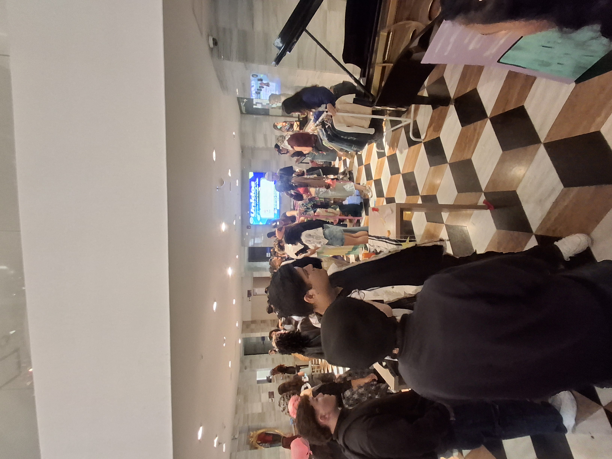
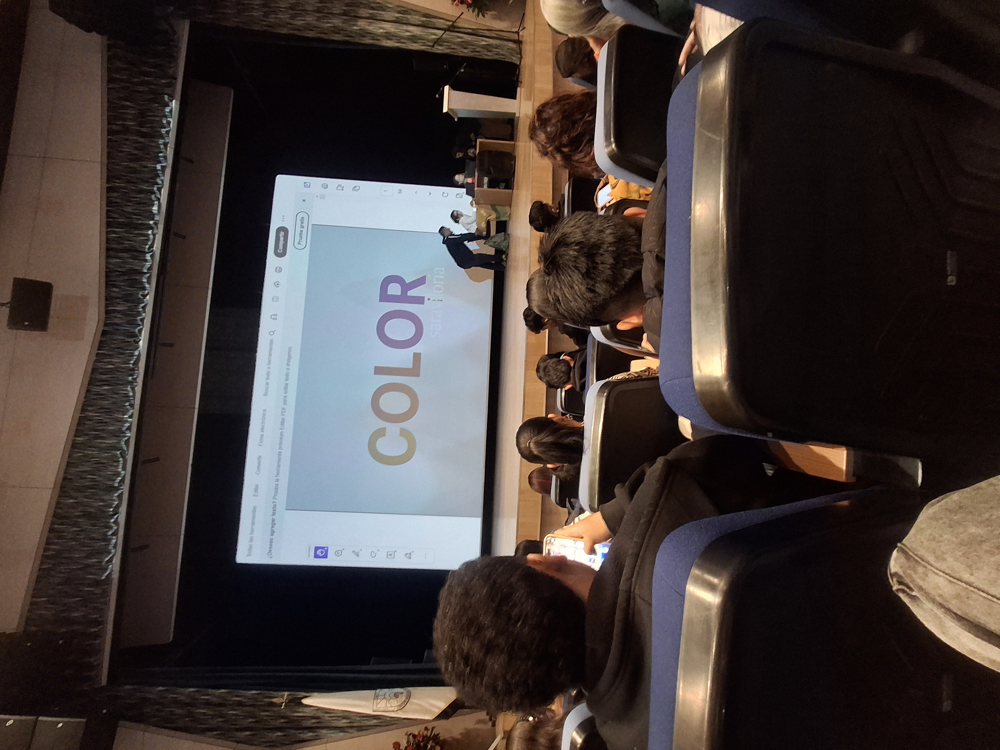
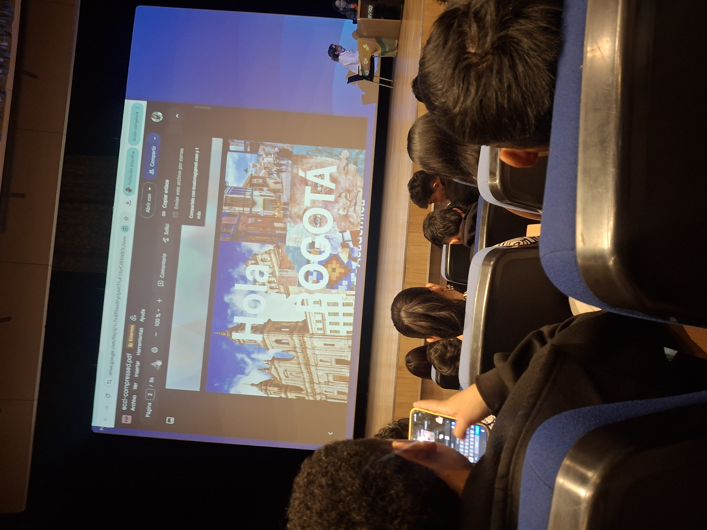
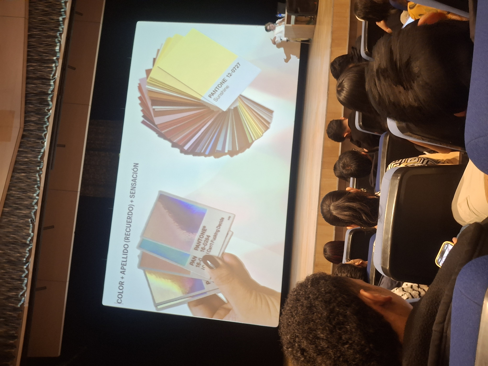

Moda ECCI: Mi experiencia en la charla de Sara Viloria
Del contraste absoluto a la sutileza de los tonos: Cómo el diseño e identidad visual impactan el despliegue de software interactivo.
Ver Bitácora de Interfaces🇨🇴 Introducción y Objetivo
"¡Hola! Como aprendiz de cuarto trimestre, asistir a la ponencia de Sara Viloria me abrió los ojos. En la foto principal se ve a Sara en el escenario durante la charla y los paneles de color que explicó. El objetivo de este espacio es plasmar cómo las imágenes del evento muestran que la semiología del color y el uso de estándares como Pantone no son adornos, sino estructuras críticas para la experiencia de usuario (UX)."

🇺🇸 Introduction & Objective
"Hello! As a fourth-trimester apprentice, attending Sara Viloria's conference completely opened my eyes. She shared a profound phrase with us: 'See the world for the first time again'. The main objective of this platform is to illustrate how color semiotics and international standards like Pantone are not mere ornaments, but critical structures that shape the overall user experience (UX)."
Galería Principal


Mi Experiencia en Moda ECCI
Resumen de la experiencia
- Aprendizajes obtenidos: la importancia del color en UX, la consistencia visual con Pantone y la creación de mensajes claros en interfaces.
- Experiencias vividas: recorrer stands creativos, ver la charla de Sara en vivo y sentir el cruce entre diseño, moda y tecnología.
- Aspectos que llamaron la atención: la semiología visual, el contraste intencional y la relación entre identidad de marca y emocionalidad del usuario.
- Relación con software: la industria creativa nutre el desarrollo de interfaces más humanas y eficientes, mientras que el software permite materializar experiencias visuales.
- Reflexión personal: estos espacios fortalecen mi formación profesional porque estoy conectando teoría de diseño con prácticas reales de UX y accesibilidad.
- Color y experiencia: el uso de color en UX guía la atención, mejora la comprensión y apoya la coherencia entre Pantone, semiología visual y diseño digital.
🇨🇴 Vivencias en el Evento
Desde el momento en que llegué al lugar, se sentía una energía increíble. Lo primero que me llamó la atención fue la gran cantidad de stands que había en la entrada; daban ganas de quedarse mirando todo detalladamente porque había muestras creativas de todo tipo, proyectos muy visuales y propuestas innovadoras de diferentes marcas y estudiantes.
Fue una experiencia muy enriquecedora salir del ambiente cotidiano de las líneas de código y las computadoras para ver cómo se maneja la creatividad en vivo. El espacio estuvo lleno de ideas disruptivas que te hacen pensar de una forma distinta, abriendo paso a la charla principal sobre el manejo del color, la cual complementó perfectamente todo el recorrido.
🇺🇸 Event Experience
From the moment I arrived at the venue, there was an incredible energy in the air. The first thing that caught my attention was the massive variety of stands right at the entrance. It was tempting to stop and look at everything in detail because there were all kinds of creative displays, highly visual projects, and innovative proposals from different brands and students alike.
It was a deeply enriching experience to step away from the daily routine of writing code lines and working on computers to witness how creativity comes alive. The environment was packed with disruptive ideas that inspire you to think outside the box, setting the perfect stage for the keynote conference on color management that beautifully complemented the entire tour.
Interacción Cromática
ES: Descubrí cómo el entorno engaña al ojo. Un bloque marrón cambia junto a un gris o un amarillo. En estas imágenes se ve cómo Sara usó paneles y muestras para demostrarlo. En código frontend, no basta con definir un HEX aislado; hay que probar cómo interactúan los componentes UI en conjunto.
EN: I discovered how the surrounding environment alters visual perception. A solid brown element looks entirely different next to a neutral gray versus a vibrant yellow. In frontend engineering, implementing an isolated HEX code is insufficient; we must test how UI elements dynamically interact within a shared context.
Disrupción de Identidad
ES: Ver estética punk combinada con tonos pastel me hizo pensar en la identidad corporativa. En las fotos se aprecia ese contraste creativo que refuerza la idea de una marca fuerte. Romper las reglas tradicionales de diseño genera innovación y un enganche de usuario disruptivo.
EN: Witnessing a rebellious punk aesthetic seamlessly blended with soft pastel pink (#FFC5D3) offered powerful insights into corporate identity. Breaking traditional design paradigms triggers genuine layout innovation and drives highly disruptive user engagement.
Prueba de Escala de Grises
ES: Al pasar interfaces a blanco y negro, mides el contraste real de luminosidad. En una de las fotos se ve el ejercicio de contraste que nos mostró Sara. Si se pierde la legibilidad, la UX falla. Esto es la base técnica de la accesibilidad web adaptativa.
EN: Converting user interfaces into grayscale allows us to measure the authentic contrast ratio of a layout. If readability decreases when color is stripped away, the user experience fails. This method serves as the core evaluation standard for web accessibility compliance.
Registro Fotográfico Extendida (Muestras del Evento)







Tecnología, Sostenibilidad y Economía Circular
Analizar la optimización de recursos en la moda nos deja una lección en ADSO: la arquitectura de software sostenible busca la reducción de residuos digitales (refactorización de código muerto), la reutilización de componentes y la optimización de peticiones para mitigar el consumo energético de servidores.
Reducción de residuos
Reducir el peso de recursos, evitar archivos duplicados y usar imágenes optimizadas disminuye el consumo de datos y energía.
Reutilización
Usar componentes Bootstrap, clases reutilizables y un diseño modular evita la repetición y facilita el mantenimiento.
Optimización de recursos
Lazy loading, compresión de imágenes y CSS eficiente hacen que el sitio cargue rápido y gaste menos energía.
Producción sostenible
Elegir tecnologías livianas, estándares accesibles y una estructura clara apoya prácticas más responsables en desarrollo.